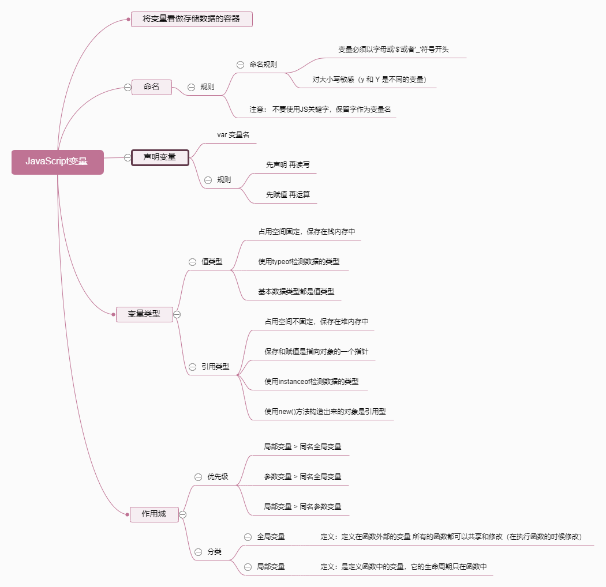
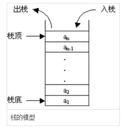
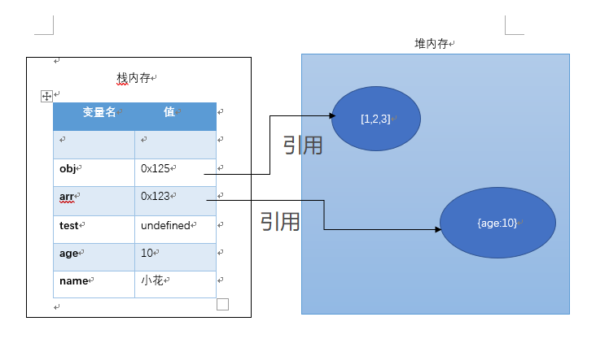

1.栈 (stack) 和 堆 (heap)
栈 (stack)：栈会自动分配内存空间，由系统进行释放，用来存放基本数据类型 [ 数字(Number)、字符串（String）、布尔(Boolean)、空（Null）、未定义（Undefined）] ，占据固定的大小的空间，是一种先进后出的数据结构。

堆 (heap)：堆是基于散列算法的数据结构，每创建一个新的对象，在堆内存中开辟一片新的空间；动态分配的内存，大小不确定，也不会自动进行释放； 生命周期由虚拟机的垃圾回收算法来决定；
2.JavaScript 数据类型 (基本数据类型，引用数据类型)
基本数据类型(5种)： 数字(Number)、字符串（String）、布尔(Boolean)、空（Null）、未定义（Undefined）；直接按值
【存放在栈内存中的简单数据段，数据大小确定，内存空间大小也确定】
引用数据类型：Array，Object；【存放在堆内存的对象，变量保存的是一个指针，空间大小不一样】
3.图解 数据类型的存储方式
基本数据类型的值是直接存在栈内存中，值与值直接是相互独立的，修改其中的一个变量不会对其他变量进行影响；
引用数据类型的值是保存在堆内存中，每创建一个新的对象，就在堆内存中开辟一个新的空间，变量保存的事对象的内存地址(对象的引用)，相同变量保存相同的对象的时候会影响值的改变；
引用类型的存储需要内存的栈区和堆区（堆区是指内存里的堆内存）共同完成，栈区内存保存变量标识符和指向堆内存中该对象的指针，也可以说是该对象在堆内存的地址。
简言之： 基本数据类型的值直接保存在栈内存；引用类型的变量标识和指针保存在栈内存，引用类型的对象保存在堆内存的地址；
var name = '小花';
var age = 10;
var test;
var arr = [1,2,3];
var obj = {age:10};通过图形表示基本数据类型和引用数据类型在内存中的存储情况：

name，age，test三种基本数据类型是直接存储在栈内存中；
arr，obj在栈内存中只是存储了一个地址来表示在堆内存中的引用；
var a=[1,2,3];
var b=a; //传地址，对象中传给变量的数据是引用类型，存储在堆内存中
b[0]=20; //b改变 会影响a的值的改变，因为他们指向的是同一个对象；
console.log(a[0]);//20;注意：b只是拥有了一个不同名的‘指针’，去指向在堆内存中的对象；并不是直接赋堆内存的对象，所以b改变也会改变的a的数值；所以b修改的时候，会根据地址回到a堆中修改，c则直接在栈中修改，并且不能指向a堆内存中。
当b清空的值时，只是断开该变量与对象的联系，另一个对象并不受影响
4.数据类型的比较
注意： 引用数据类型的复制，就牵扯到 ‘浅拷贝’ 和 ‘深拷贝’ 的学习